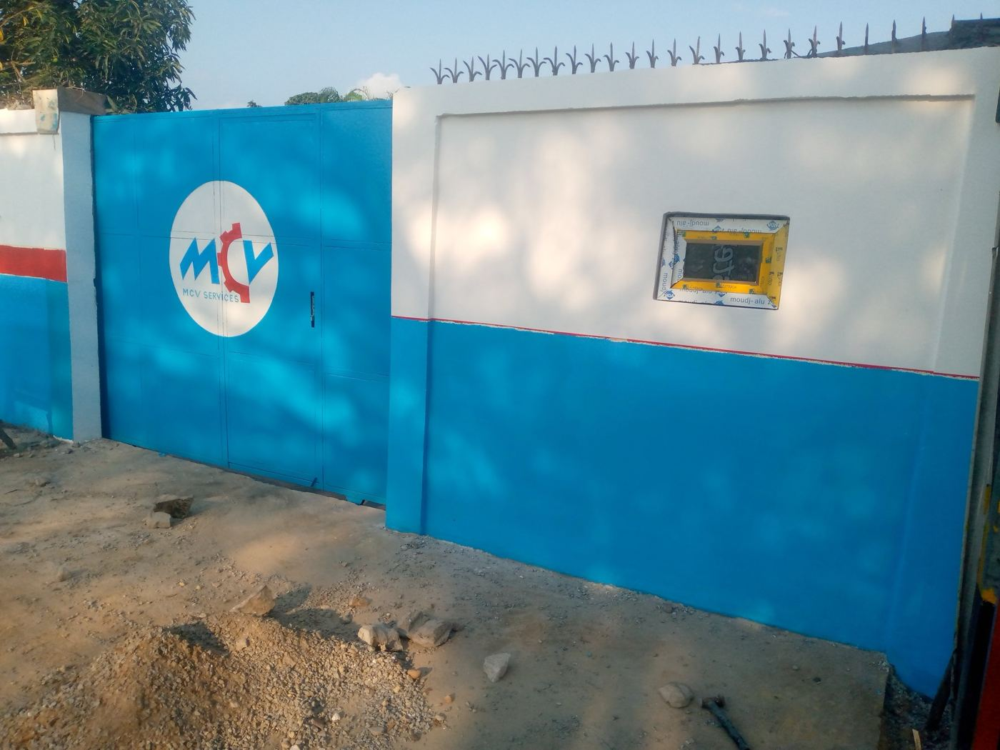
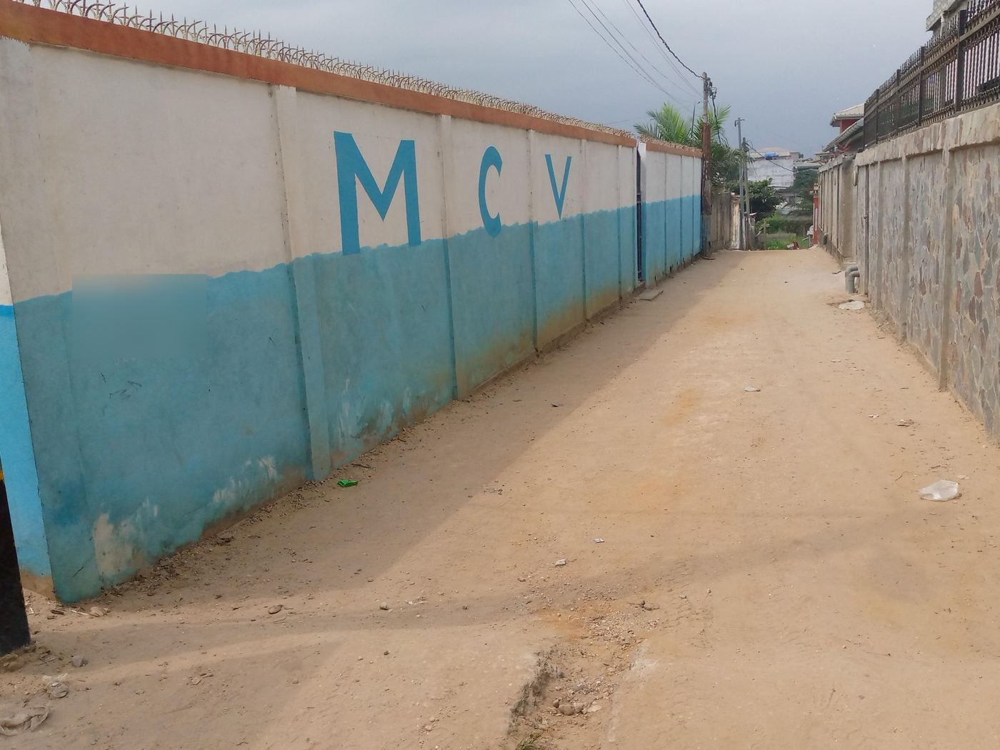
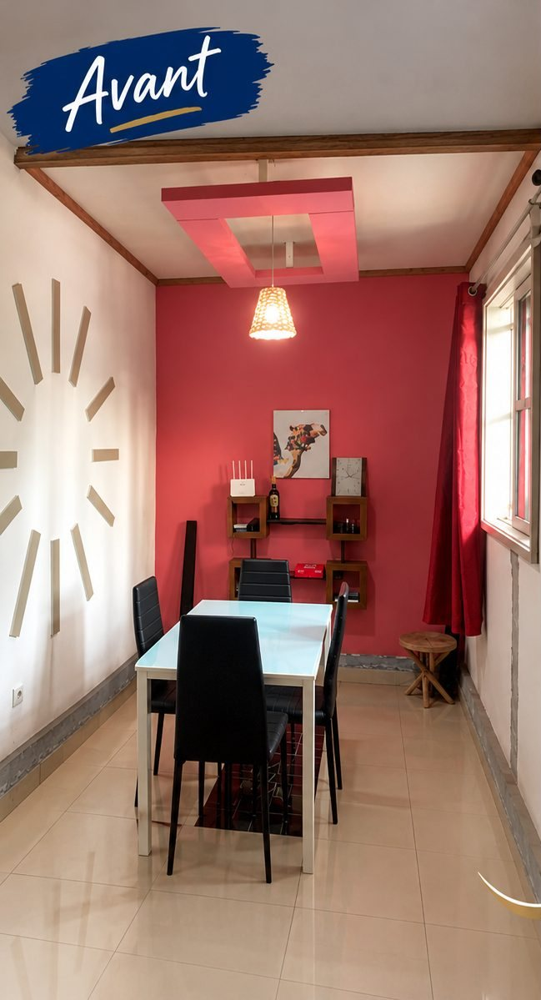
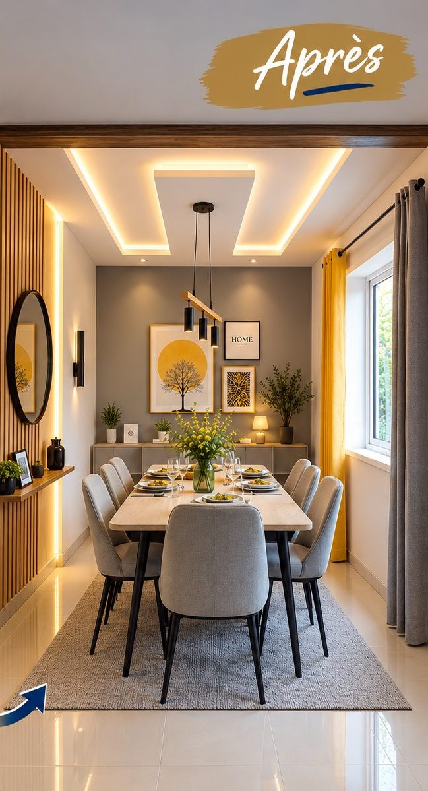
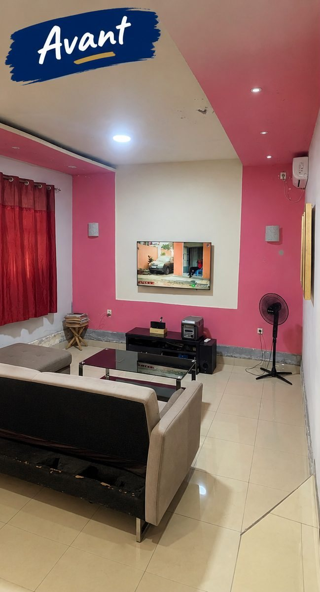
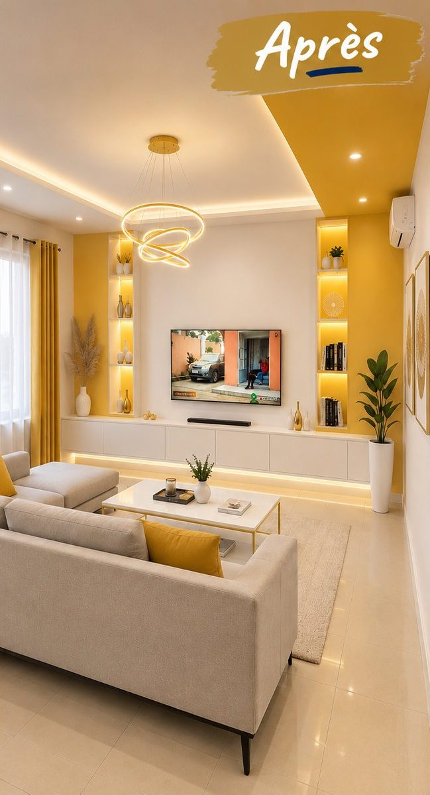

Rénovation intérieure et esthétique
Modernisation des espaces et amélioration des finitions : peinture, carrelage, revêtements de sols, faux plafonds, menuiserie, éclairage, aménagement intérieur et autres travaux de finition.
Vous souhaitez moderniser votre habitation, remettre un bâtiment en état ou transformer vos locaux professionnels ?
AEC vous accompagne dans l’évaluation de l’existant, la préparation des travaux et l’organisation des interventions, en tenant compte de vos objectifs et de votre budget.

Un projet de rénovation ne consiste pas uniquement à remplacer des équipements ou à refaire les finitions. Il faut d’abord comprendre l’état du bâtiment, identifier les travaux nécessaires et distinguer les interventions prioritaires des améliorations souhaitées.
Chez AEC, nous privilégions une approche qui commence par l’observation et l’évaluation de l’existant.
Cette préparation permet de mieux définir les travaux, d’anticiper les besoins et de proposer une intervention cohérente avec votre budget.

Photo réelle · AprèsUne rénovation bien préparée permet de mieux décider.
Avant de proposer une intervention, nous cherchons à comprendre l’état du bâtiment, les besoins du client et les contraintes du site.
Cette étape permet notamment de :
L’objectif est de vous donner une meilleure visibilité sur les interventions à engager avant de mobiliser votre budget.
Tous les travaux ne doivent pas nécessairement être réalisés en même temps.
Lorsque votre budget ne permet pas de réaliser l’ensemble des travaux immédiatement, AEC peut vous accompagner dans la définition de plusieurs phases d’intervention.
Nous vous aidons à identifier les travaux prioritaires, les améliorations pouvant être reportées et les étapes permettant de conserver une cohérence technique et fonctionnelle.
Cette organisation vous permet de programmer votre rénovation progressivement, selon vos moyens et vos priorités.
Base industrielle · durée des travaux : 1 mois. Clôture, portail et entrée repris et repeints aux couleurs de l’entreprise.

Photo réelle · AvantDécouvrez des transformations réalisées ou des propositions d’aménagement montrant comment un espace peut être modernisé et mieux organisé.


AvantAprès · simulation 3D

AvantAprès · simulation 3DLes images « Après » sont des rendus de la proposition d’aménagement (simulation 3D).